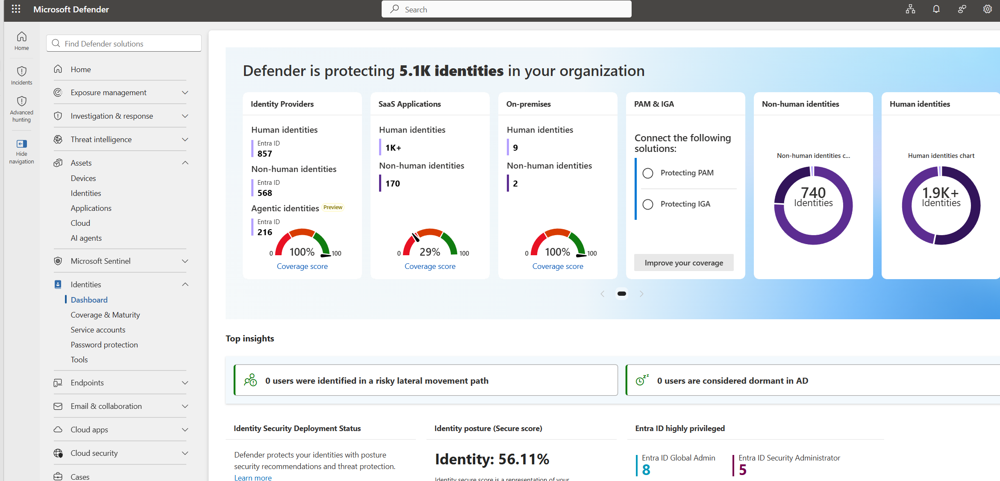

Threat Detection • Endpoint Investigation • Alert Triage • Incident Response • Microsoft Security Operations
Microsoft Defender XDR is an extended detection and response platform that helps security teams detect, investigate, and respond to threats across endpoints, identities, email, cloud apps, and Microsoft 365.
As a Security Analyst, I use Defender XDR to review incidents, analyze alerts, inspect affected devices and users, investigate timelines, and support containment and remediation activities.
My hands-on experience includes alert triage, endpoint investigation, advanced hunting, incident correlation, evidence review, and response coordination with Microsoft Sentinel and Microsoft Entra ID.
Threat Detection, Investigation, and Response

This project demonstrates my practical experience working with Microsoft Defender XDR in a security operations workflow. The objective was to detect suspicious activity, investigate alerts, validate incidents, and support fast response.
I reviewed incident severity, affected assets, alert evidence, device timelines, identity signals, and related security events to understand the full scope of each case.
The project also included advanced hunting queries, endpoint evidence review, and correlation with Microsoft Sentinel to improve investigation quality and response decisions.
Security Analyst
SOC Investigation
Microsoft Defender XDR
Detection, Triage & Response
Microsoft 365 Security
Alert Analysis • Hunting • Response
Activities performed while working with Microsoft Defender XDR
Reviewed security alerts, severity, affected assets, and evidence to decide investigation priority.
Analyzed incident timelines, related alerts, device details, and identity activity to validate threats.
Used hunting queries to search for suspicious events, affected devices, and indicators of compromise.
Supported containment, remediation, documentation, and escalation based on confirmed incident scope.
Microsoft security tools used throughout the project
✔ Investigated Defender XDR incidents and endpoint alerts.
✔ Correlated device, user, and alert evidence.
✔ Used hunting queries to identify suspicious activity.
✔ Supported containment and remediation decisions.
✔ Improved incident documentation and escalation quality.
Microsoft Defender XDR
Endpoint Security
Alert Triage
Incident Investigation
Advanced Hunting
Security Operations Center (SOC)
Security improvements achieved through Microsoft Defender XDR
Improved visibility into suspicious endpoint, identity, and Microsoft 365 activity.
Prioritized incidents using severity, evidence, affected assets, and business context.
Used timelines and hunting queries to understand attack activity and incident scope.
Documented confirmed findings with clear technical evidence and analyst notes.
Connected Defender XDR findings with Sentinel and Entra ID investigation workflows.
Helped security teams make accurate containment and remediation decisions.
This page showcases my hands-on experience with Microsoft Defender XDR, where I triage alerts, investigate incidents, review endpoint evidence, use advanced hunting, and support security response.
Threat Detection • Endpoint Investigation • Incident Response
Defender XDR investigation process followed during security operations
Monitored Defender XDR incidents and reviewed severity, entities, evidence, and alert category.
Analyzed affected devices, users, file activity, process activity, and incident timelines.
Used advanced hunting to search for related indicators, patterns, and affected assets.
Documented findings, escalated confirmed threats, and supported remediation activities.
End-to-end lifecycle used for Defender XDR incident handling.
Microsoft Defender XDR
Reviewed incidents generated from endpoint, identity, email, and cloud security signals.
Incident Timeline
Analyzed related alerts, device activity, user context, and security evidence.
Advanced Hunting
Searched for related indicators and suspicious patterns across the environment.
Security Operations Center
Supported containment, remediation, escalation, and incident closure activities.
Detection Optimization
Documented lessons learned and improved investigation notes for future incidents.